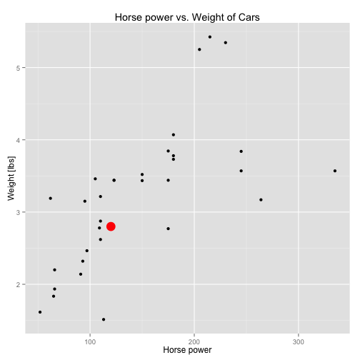

- The
mtcarsdataset is used - Task: using a logistic regression to determine the probability if a car fits the model
- Parameter used for the model: horse power (hp) and weight (wt)
R. Ansorg
mtcars dataset is used
glm <- glm(data=mtcars, formula=am ~ hp + wt, family=binomial(link="logit"))
newdata <- data.frame(hp=120, wt=2.8) # hp=horse power, wt=weight [lbs/1000]
predict(glm, newdata, type="response")
## 1
## 0.6418125
The probability of the car (horse power 120, weight 2800 lbs) being fitted with a manual transmission is about 64.18%.